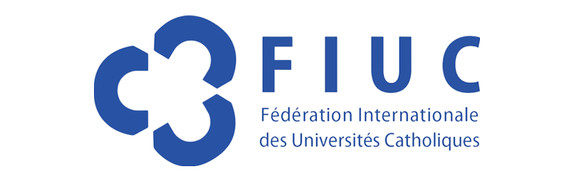
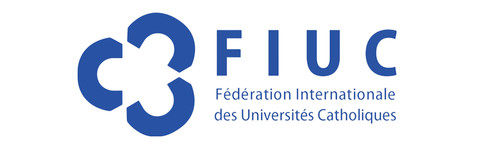

UCSS ONLINE
CARRERAS A DISTANCIA
¡Transforma nuestro país y el mundo con valores!
#AvanzaConUCSSonline
MAESTRÍAS ONLINE
¿Por qué estudiar en UCSS online?
Más de 25 años enseñando bajo principios católicos
Tecnología moderna para estudiar desde cualquier dispositivo
Profesores capacitados, con títulos avanzados y experiencia en su sector
Intercambio y colaboración en Europa con U. Cattolica del Sacro Cuore di Milano y U. de Alicante
Precios alcanzables y facilidades de pago
Relación cercana entre docentes y alumnos, incluso si estudias en linea
CARRERAS A DISTANCIA
Conoce nuestra oferta online
Carreras a distancia
Postula aquí
Te invitamos a compartir tus datos para que nuestro equipo de admisiones te contacte y conozcas los beneficios de nuestros programas
CARRERAS A DISTANCIA
Logros Universidad Católica Sedes Sapientiae
10,000
Alumnos (al 2023)
7
Filiales en:
Lima, Cajamarca, Ucayali, San Martín, Piura, Junín
8
Convenios Internacionales con Universidades de España e Italia
5
Alianzas

 

2
Acreditaciones de calidad

CARRERAS A DISTANCIA
Perfil del aspirante
CARRERAS A DISTANCIA
Perfil del aspirante
- Trabajadores activos con grados técnicos que busquen avanzar en su vida profesional y obtener su título mientras trabajan.
- Emprendedores que desean fortalecer habilidades y adquirir nuevos conocimientos en su área.
- Personas que desean obtener una carrera universitaria mientras manejan responsabilidades personales y se encuentran ubicados en lugares lejanos a las instituciones educativas del país.
- Profesionales que quieran realizar una segunda carrera universitaria.
CARRERAS A DISTANCIA
Conoce la experiencia de nuestros egresados
CARRERAS A DISTANCIA
¿Por qué estudiar en UCSS online?
¿Qué son las carreras online?
Las carreras online son programas universitarios que se ofrecen a través de Internet, lo que significa que no es necesario asistir físicamente a clases en un campus. También se conocen como pregrados virtuales, pregrados en línea, pregrados en remoto, carreras virtuales, carreras en línea, carreras a distancia, carreras semipresenciales, carreras universitarias a distancia o carreras en remoto. Esta modalidad te brinda flexibilidad para acceder a los materiales de estudio y completar tus estudios según tu propio horario y ubicación.
En UCSS virtual, ofrecemos carreras a distancia acreditadas que te otorgan una titulación oficial al completar con éxito tus estudios, al igual que en programas tradicionales.
¿Qué es la modalidad a distancia?
Esta modalidad se denomina a distancia, ya que la mayoría de sus semestres se imparten de forma virtual y en las asignaturas que tienen componente práctico es necesario asistir a la sede correspondiente, solamente en los últimos semestres.
¿Cuáles son las ventajas de una carrera universitaria a distancia?
- Flexibilidad de horarios: Puedes estudiar cuando mejor te convenga y adaptar tus estudios a tus compromisos personales o laborales.
- Ahorro de tiempo y dinero: Al no tener que desplazarte al campus todos los días, ahorras dinero en transporte y manutención, y tiempo en viajes.
- Interacción en línea: Puedes comunicarte con tus profesores y compañeros durante las clases por medio del computador, celular o herramienta digital que tú prefieras.
- Acceso a recursos en línea:Tienes a tu disposición materiales de estudio, conferencias grabadas, foros de discusión y otros recursos en internet que enriquecen tu proceso de aprendizaje.
¿Cómo se desarrollan las clases presenciales de una carrera a distancia?
En las clases presenciales, podrás hablar directamente con profesores y compañeros. Nos centramos en actividades prácticas, discusiones en grupo, laboratorios, salidas de campo y aplicaciones prácticas de lo que aprendes en teoría. Estas interacciones cara a cara son muy importantes para entender mejor y relacionarte con los demás en el ámbito académico.
¿Por qué hay un componente presencial en una carrera a distancia?
El componente presencial obedece a los lineamientos establecidos por SUNEDU para la obtención del grado académico al cursar una carrera universitaria, y así garantizar la calidad y la formación integral de los profesionales del Perú. Las clases presenciales están diseñadas como prácticas universitarias y complementan la teoría aprendida mediante la aplicación de conocimientos teóricos en casos reales.
¿Cuál es la duración típica de una carrera a distancia?
En UCSS virtual, nuestros programas tienen una duración similar a los pregrados presenciales tradicionales, generalmente de cuatro a cinco años.
¿Qué ventajas ofrecen las carreras a distancia en Perú?
Las carreras a distancia en Perú ofrecen flexibilidad en los horarios y la opción de estudiar desde cualquier lugar con conexión a internet. Esto te permitirá ajustar tus estudios a tus compromisos laborales y personales, lo que hace más fácil combinar la educación con otras responsabilidades. Elige una de nuestras carreras a distancia y disfruta de todas estas ventajas con UCSS virtual.
¿Por qué elegir una carrera a distancia en UCSS virtual?
En UCSS virtual, encontrarás más que una universidad una comunidad comprometida con el bien común. Además de recibir una formación académica de calidad, serás parte de una comunidad basada en valores como respeto, humildad, tolerancia, responsabilidad, cooperación, honestidad y sencillez.
- Flexibilidad y comodidad a tu medida: estudiar una carrera semipresencial en UCSS virtual te permite adaptar tu educación a tu ritmo y estilo de vida. Con clases virtuales en vivo y grabadas, y clases presenciales al final de la carrera, es ideal para quienes trabajan, tienen responsabilidades familiares o viven en zonas alejadas.
- Formación de calidad con reconocimiento: Obtendrás la misma excelencia académica que en programas presenciales con docentes calificados y con experiencia. Además, UCSS virtual es una universidad reconocida por SUNEDU, lo que garantiza la calidad de tu educación.
- Experiencia personalizada y acompañamiento constante: En UCSS virtual, puedes estudiar una carrera a distancia de manera más fácil y a un precio alcanzable. Siempre estarás acompañado en tu camino hacia el logro de tus metas. Contamos con clases flexibles que se ajustan a tu horario y precios que puedes pagar. Además, nuestras carreras universitarias virtuales te permiten estudiar desde cualquier lugar con conexión a internet. Así, podrás mejorar tu calidad de vida y la de tu familia sin importar las circunstancias.
¿En las carreras a distancia de UCSS virtual, puede variar el porcentaje de virtualidad?
Los programas académicos de la Universidad Católica Sedes Sapientiae se ajustan a los porcentajes de virtualidad y presencialidad establecidos por la normativa vigente. En caso de modificaciones en estos porcentajes, los programas se adaptarán en consecuencia, por lo que los alumnos aceptan sujetarse a dichos cambios.
¿Qué carreras hay para gente que trabaja?
En UCSS virtual hemos diseñado diferentes carreras para gente que trabaja, las cuales son: